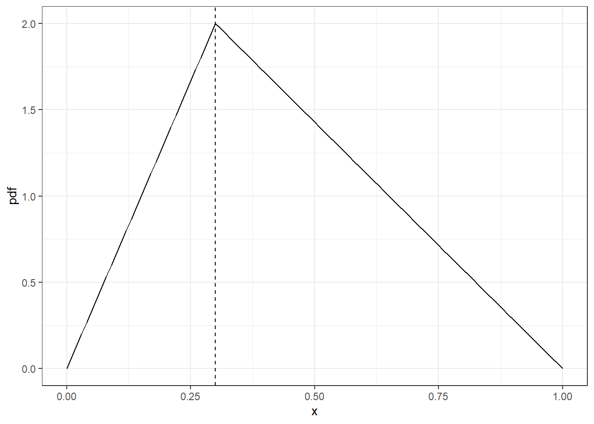
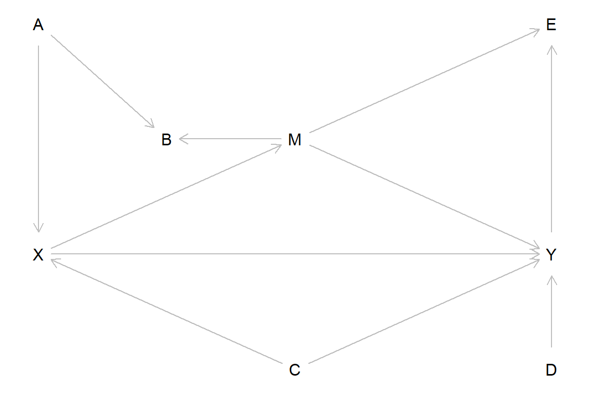
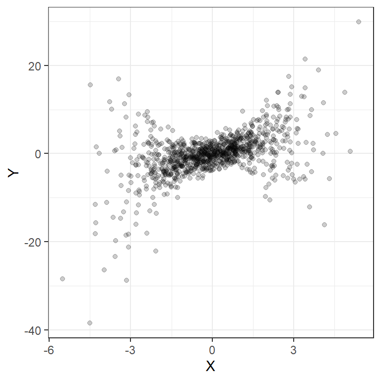
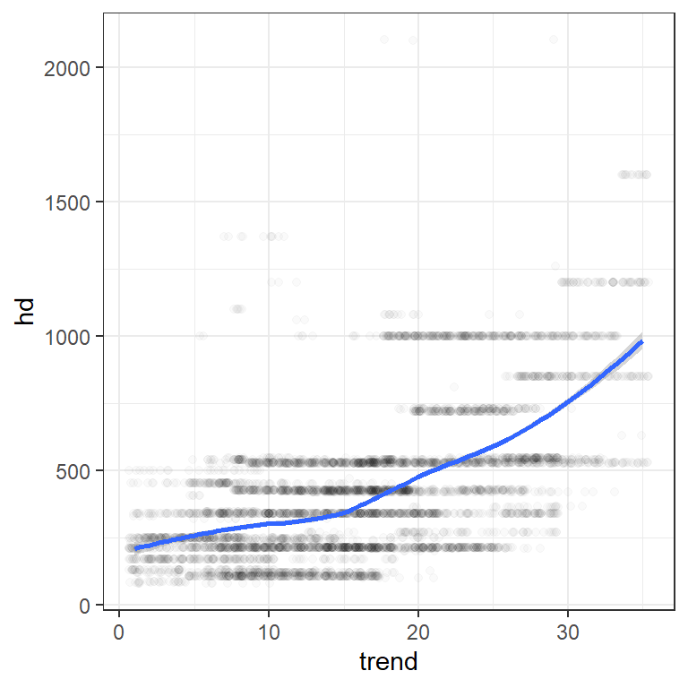
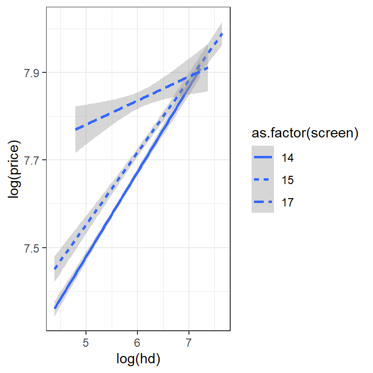

17 Past exam questions
17.1 Fall 2023 5810 Exam 1
You may use the following as a reminder, where appropriate:
\[ \sqrt{N}\frac{\frac{1}{N}\sum_{i=1}^NX_i-E[X]}{\sqrt{V[X]}}\xrightarrow[]{d}N(0,1)\\ g(x)\approx g(x_0)+g'(x_0)(x-x_0) \]
17.1.1 Probability
You flip three fair coins (i.e. the probability that a coin comes up heads is 50%), and count the number of coins that do not match. Let this number be \(X\). For example:
- If you flipped three heads, then \(X=0\) (because they all match)
- If you flipped one head then two tails, then \(X=2\) because the first two do not match, the first and third do not match, but the second and third do match.
Hint: Write out a table showing the \(2^3=8\) possible combinations of 3 coin flips you could observe, the probability of each of these occurring, and the value of \(X\) in each of these cases.
- What is the support of \(X\)?
- Is \(X\) a discrete or continuous random variable? Briefly explain your answer.
- What is the probability mass/density function of \(X\)?
- What is \(E[X]\), the expectation of \(X\)?
- What is \(V[X]\), the variance of \(X\)?
17.1.2 Estimation and inference
Consider the geometric distribution, which has the following properties:
\[ \begin{aligned} \text{parameter: } \theta&\in (0,1)\\ \text{pmf: } p_X(x)&=\begin{cases}(1-\theta)^{x-1}\theta &\text{ if }x = 1, 2, 3,\ldots\\ 0&\text{otherwise} \end{cases}\\ \text{cdf: } F_X(x)&=1-(1-\theta)^x\quad \text{ (for positive integers)}\\ E[X]&=\frac{1}{\theta}\\ V[X]&=\frac{1-\theta}{\theta^2} \end{aligned} \]
You can think of the geometric distribution as follows: You flip a coin that comes up heads with probability \(\theta\) and tails with probability \((1-\theta)\) until you first flip heads. \(X\) is the number of times you flip the coin.
- Suppose you flip your coin 10 times before stopping (i.e. \(X=10\)). Using this as your test statistic, what is the \(p\)-value for the following hypothesis test?
\[ H_0: \ \theta=0.5, \quad H_A:\ \theta<0.5 \]
Now suppose that you have a sample of 1,000 draws from this distribution with a sample mean of \(\bar x=5\).
Based on the expression for \(E[X]\), propose an estimator for \(\theta\). Briefly explain why it might make sense to use this estimator.
Using the above information, write down a test statistic that is approximately standard normal (i.e. \(N(0,1)\)) for the following null and alternative hypotheses:
\[ H_0: \ \theta=0.3, \quad H_A:\ \theta\neq0.3 \]
- (5810 students only) Approximate the variance of the estimator you proposed in part (2).
17.2 Fall 2022 5810, Exam 1
You may use the following as a reminder, where appropriate:
\[ \sqrt{N}\frac{\frac{1}{N}\sum_{i=1}^NX_i-E[X]}{\sqrt{V[X]}}\xrightarrow[]{d}N(0,1) \]
17.2.1 Probability
You roll a fair, six-sided, die repeatedly until one of the following events occurs:
- The roll is a one
- You have rolled the die four times
Your random variable \(X\) is the number of time you roll the die.
What is the support of \(X\)? Is \(X\) a discrete or continuous random variable?
What is the probability that \(X=2\)? Note that this is the probability that the first roll is not a one, and the second roll is a one.
What is the probability mass function or probability density function of \(X\)?
Calculate \(E[X]\)
Calculate \(V[X]\)
17.2.2 Inference
You have a sample \(\{X_i\}_{i=1}^N\) and calculate the sample mean \(\bar x=\frac{1}{N}\sum_{i=1}^NX_i=2.7\). Youtest the following null hypothesis against the alternative hypothesis:
\[ H_0:\ E[X]=3,\quad H_A:\ E[X]\neq 3 \]
using the following test statistic:
\[ z=\left(\frac{\bar x}{3}-1\right) \]
The cumulative density function when \(H_0\) is true is: \[F(x)=(1+\exp(-x))^{-1}\]
and so the inverse cumulative density function (solving \(F(x)=p\)) is:
\[ F^{-1}(p)=\log(p)-\log(1-p) \]
Choose the correct statement, and explain why it is true:
- We will reject the null hypothesis when \(z\) is sufficiently positive
- We will reject the null hypothesis when \(z\) is sufficiently negative
- We will reject the null hypothesis when \(|z|\) is sufficiently large
- We will reject the null hypothesis when \(|z|\) is sufficiently small
Determine the rejection region for this test at the 3% level of significance
(5810/SISS students only) Calculate the \(p\)-value for this test
17.2.3 Estimators and large-sample properties
Consider the triangular distribution, which has a probability density function like this:

It can be shown (but I am not requiring you to derive) that:
\[ \begin{aligned} E[X]&=\frac{1+c}{3}\\ V[X]&=\frac{1+c^2-c}{18} \end{aligned} \]
Suppose that you have a sample of \(N=100\) independent and identically distributed draws form this distribution \(\{X_i\}_{i=1}^N\), and calculate the sample mean \(\bar x = \frac{1}{N}\sum_{i=1}^NX_i=0.25\)
- Propose an estimator for \(c\), call it \(\hat c\). Explain why you chose this estimator. Estimate \(c\) using your estimator \(\hat c\)
- Is your estimator unbiased and/or consistent? Explain your answer.
- (5810/SISS students only) Construct a 2-sided 95% confidence interval around your estimate. You may use the following result: \[ \Phi(-1.96)=0.025,\quad \Phi(1.96)=0.975 \] where \(\Phi(\cdot)\) is the standard normal cumulative density function.
17.3 5810 Exam 2 (2022)
The following formula may be used:
\[ \begin{aligned} F&=\frac{\left(R^2_\text{unrestricted}-R^2_\text{restricted}\right)/q}{\left(1-R^2_\text{unrestricted}\right)/(N-k)}\\ q&=\text{number of restrictions}\\ N&= \text{sample size}\\ k&=\text{number of coefficients in the unrestricted model} \end{aligned} \]
17.3.1 Directed Acyclic Graphs

For the above directed acyclic graph, note that there are two ways that \(X\) can affect \(Y\):
\[ \begin{aligned} X\to Y&\quad\text{the direct effect}\\ X\to M\to Y&\quad \text{the indirect effect} \end{aligned} \]
You estimate the following regressions from a dataset d generated that conforms to this directed acyclic graph:
| Dependent variable: | ||||||||||
| Y | ||||||||||
| (1) | (2) | (3) | (4) | (5) | (6) | (7) | (8) | (9) | (10) | |
| X | 1.446*** | 0.796*** | 0.915*** | -0.011 | 0.915*** | 1.606*** | 1.209*** | -0.117*** | 0.927*** | 1.513*** |
| (0.087) | (0.107) | (0.132) | (0.028) | (0.132) | (0.115) | (0.153) | (0.023) | (0.125) | (0.138) | |
| A | -0.007 | -0.636*** | 0.201 | |||||||
| (0.043) | (0.225) | (0.171) | ||||||||
| B | 0.022 | 0.614*** | ||||||||
| (0.023) | (0.107) | |||||||||
| M | 1.303*** | 1.288*** | -0.311*** | 1.288*** | 1.276*** | |||||
| (0.135) | (0.135) | (0.032) | (0.135) | (0.128) | ||||||
| C | -0.284 | 0.058 | -0.284 | -0.406** | -0.239 | 0.062* | -0.266 | -0.279 | ||
| (0.186) | (0.036) | (0.186) | (0.193) | (0.213) | (0.035) | (0.176) | (0.205) | |||
| D | 0.018 | 1.368*** | 1.383*** | |||||||
| (0.025) | (0.126) | (0.132) | ||||||||
| E | 0.727*** | 0.711*** | ||||||||
| (0.004) | (0.004) | |||||||||
| Constant | -0.083 | -0.063 | -0.059 | 0.058** | -0.059 | -0.078 | -0.083 | 0.059** | -0.055 | -0.072 |
| (0.143) | (0.137) | (0.137) | (0.024) | (0.137) | (0.143) | (0.141) | (0.026) | (0.130) | (0.136) | |
| Observations | 1,000 | 1,000 | 1,000 | 1,000 | 1,000 | 1,000 | 1,000 | 1,000 | 1,000 | 1,000 |
| R2 | 0.218 | 0.285 | 0.287 | 0.978 | 0.287 | 0.221 | 0.247 | 0.975 | 0.362 | 0.299 |
| Note: | p<0.1; p<0.05; p<0.01 | |||||||||
- Find all of the paths between \(X\) and \(Y\) (there are six).
- For each path, are they open or closed (blocked)? If they are blocked, explain why they are blocked?
- What adjustment set is needed to unbiasedly estimate the causal effect of \(X\) on \(Y\) (including both the direct and indirect effect)?
- Which of the above regression models plausibly estimate this causal effect of \(X\) on \(Y\). There could be more than one correct answer here, I am looking for a complete list. For each column of the table, explain why or why not.
- While \(D\) is not in any of the paths between \(X\) and \(Y\), explain why you might want to include it on the right-hand side of your regression.
- The plot below shows the (unconditional) relationship between \(X\) and \(Y\). Discuss what you might do differently about estimating the regressions, and whether or not it changes the bias properties of your estimator.
- (5810/SISS students only) Suppose that when I generated this dataset, I simulated every variable so that its effect on other variables was one (I in fact did not do this, so don’t use this to check your answers above). E.g., to generate \(B\) I would have coded
... %>% mutate(B = A+M+rnorm(n)). What total effect size would you expect for the total effect of \(X\) on \(Y\)? Briefly explain your answer.

17.3.2 Linear Regression
The following dataset contains information on the prices of 486 computers from 1993 to 1995. Here 486 refers to a type of processor, not the number of observations.
The variables in the dataset are:
priceprice in US dollarsspeedclock speed in MHzhdsize of hard drive in MBramsize of RAM in MBscreensize of screen in inchescdis a CD-ROM present (i.e. does it have a CD drive?)multiis a multmedia kit (speakers, sound card) present?premiumis the manufacturer a “premium” manufacturer (IBM, COMPAQ)adsnumber of 486 price listings for each monthtrendtime trend indicating the month starting from January 1993.
d<-read.csv("https://vincentarelbundock.github.io/Rdatasets/csv/Ecdat/Computers.csv")
d %>% sample_n(5) %>% knitr::kable()| rownames | price | speed | hd | ram | screen | cd | multi | premium | ads | trend |
|---|---|---|---|---|---|---|---|---|---|---|
| 4219 | 3299 | 66 | 1000 | 16 | 15 | yes | no | yes | 225 | 19 |
| 6049 | 1994 | 100 | 850 | 8 | 14 | yes | no | yes | 52 | 31 |
| 5815 | 1755 | 75 | 540 | 8 | 15 | yes | yes | yes | 132 | 28 |
| 2565 | 2094 | 50 | 424 | 4 | 14 | yes | yes | yes | 292 | 14 |
| 2692 | 2039 | 33 | 212 | 4 | 14 | no | no | no | 292 | 14 |
reg<-list()
reg[[1]]<-d %>% lm(formula = price~speed+hd+ram+screen)
reg[[2]]<-d %>% lm(formula = log(price)~log(speed)+log(hd)+log(ram)+as.factor(screen)+trend)
reg[[3]]<-d %>% lm(formula = log(price)~log(speed)+log(hd)+log(ram)+as.factor(screen)+as.factor(cd)+as.factor(multi)+trend)
reg[[4]]<-d %>% lm(formula = price~speed+hd+ram+screen+trend)
reg[[5]]<-d %>% lm(formula = log(price)~as.factor(cd)+as.factor(multi))
stargazer(reg,type="html",keep.stat = c("n","rsq"))| Dependent variable: | |||||
| price | log(price) | price | log(price) | ||
| (1) | (2) | (3) | (4) | (5) | |
| speed | 5.249*** | 8.655*** | |||
| (0.278) | (0.213) | ||||
| hd | -0.579*** | 0.628*** | |||
| (0.035) | (0.031) | ||||
| ram | 76.745*** | 48.691*** | |||
| (1.536) | (1.213) | ||||
| screen | 105.526*** | 126.177*** | |||
| (6.189) | (4.625) | ||||
| log(speed) | 0.195*** | 0.194*** | |||
| (0.005) | (0.005) | ||||
| log(hd) | 0.115*** | 0.113*** | |||
| (0.006) | (0.006) | ||||
| log(ram) | 0.198*** | 0.190*** | |||
| (0.005) | (0.005) | ||||
| as.factor(screen)15 | 0.022*** | 0.023*** | |||
| (0.004) | (0.004) | ||||
| as.factor(screen)17 | 0.159*** | 0.162*** | |||
| (0.006) | (0.006) | ||||
| as.factor(cd)yes | 0.031*** | 0.144*** | |||
| (0.005) | (0.007) | ||||
| as.factor(multi)yes | 0.020*** | -0.090*** | |||
| (0.006) | (0.010) | ||||
| trend | -0.021*** | -0.022*** | -48.476*** | ||
| (0.0003) | (0.0003) | (0.686) | |||
| Constant | 10.333 | 6.172*** | 6.197*** | 32.957 | 7.617*** |
| (88.222) | (0.028) | (0.028) | (65.806) | (0.004) | |
| Observations | 6,259 | 6,259 | 6,259 | 6,259 | 6,259 |
| R2 | 0.459 | 0.719 | 0.723 | 0.699 | 0.063 |
| Note: | p<0.1; p<0.05; p<0.01 | ||||
The following information may be useful to you in answering this question:
## [1] 14 15 17## [1] 4 2 8 16 32 24- The laptop I am currently using has the following properties described below. According to the model in column (1), how much should my laptop cost if I purchased it in 1994? Discuss why this prediction is not plausible.
- 850 GB hard drive (i.e. 850,000 MB)
- 2500 MHz processor speed
- 16 GB RAM (i.e. 16,000 MB)
- A 14” screen
- Interpret the coefficient on
ramin column 1 - Interpret the coefficient on
log(speed)in column 2 - Interpret the coefficient on
as.factor(screen)15in column 2 - Interpret the coefficient on
trendin column 2 - Suppose that you wanted to jointly test whether having a CD drive and a multimedia kit has a significant effect on price. Explain the information you could get from the table to do this test, and any assumptions you need to make for the test to be valid. (I am not asking you to do this test, just explain the process)
- Comparing columns 1 and 4, the sign for
hdis flipped. Using the plot below as a guide, explain why this is to be expected.
d %>% ggplot(aes(x=trend,y=hd))+geom_jitter(alpha=0.02)+theme_bw()+geom_smooth(method="loess",formula="y~x")
- Consider the plot below. What regression equation could you use to estimate the equation of the lines in this plot?
d %>% ggplot(aes(y=log(price),x=log(hd),linetype=as.factor(screen)))+geom_smooth(method="lm",formula="y~x")+theme_bw()
17.4 5820, Exam 1 (2023)
- This exam has two questions, each with several parts
- Question 1 has three parts
- Question 2 has seven parts
- This exam is closed book
- You can use a calculator, but you won’t need one
17.4.1 Maximum likelihood
The logarithmic distribution is a discrete probability distribution with support \(k\in\{1, 2, 3, 4,\ldots\}\). Its probability mass function is:
\[ \begin{aligned} p(k)&=\begin{cases} \frac{-1}{\log(1-\rho)}\frac{\rho^k}{k}&\text{if }k=1, 2, 3, 4 \ldots\\ 0&\text{otherwise} \end{cases} \end{aligned} \]
where \(\rho\in(0,1)\) is the distribution’s parameter. Note that since \(\rho\in(0,1)\), it follows that \(\frac{-1}{\log(1-\rho)}>0\).
Suppose that you have a sample of data from this distribution \(\{k_i\}_{i=1}^n\), and you need to estimate the parameter \(\rho\).
Write down the likelihood function.
Convert your answer into the log-likelihood function
Determine the first-order condition that implicitly defines the maximum likelihood estimator \(\hat\rho\). Do not try to solve for \(\hat\rho\) analytically, this is one we would solve numerically.
17.4.2 Fire trucks
Suppose that there is a mandate for towns within a state that requires at least one fire truck per 10,000 residents. Since towns do not want to spend any more money than they have to on fire trucks, they do not purchase more fire trucks than mandated. Therefore we see a relationship like Figure 17.1 in the data.
Figure 17.1: The relationship between a town’s population and the number of fire trucks it has
For your analysis, you will focus on towns with fewer than 25,000 residents. You are interested in the response time, measured in minutes (i.e. how long between a 911 call starting and a fire truck showing up at the scene). our data look something like Figure 17.2:
Figure 17.2: Data on response time
Explain why a simple linear regression with
ResponseTimeon the left-had side andFireTruckson the right-hand side would not unbiasedly estimate the causal effect of an additional fire truck on response time.Explain how you could estimate the causal effect of an additional fire truck on response time. Specifically, explain the assumptions needed for your technique to work, and how this dataset allows you to use this technique
Discuss two different specifications you could use to plausibly estimate this causal effect. E.g. what combinations of right-hand-side variables could you use? What restrictions on the data would you use?
For each specification described above, write out the regression equation you would use to estimate the model so that one of the coefficients is equal to your estimate of the causal effect. Be specific about any variable transformations you need to make. I am looking for something like the following equation, and a note saying which coefficient measures the causal effect:
\[ Y_i=\beta_0+\beta_1X_{1,i}+\beta_2X_{2,i}+\ldots+\epsilon_i \]
Now suppose that of being interested in the effect of fire trucks on response time, instead we are now interested in the effect of response times on property damage due to fire. The data for this are shown in Figure 17.3.
Figure 17.3: Data on response time and property damage due to fire.
Explain why the simple linear regression
lm(formula=PropertyDamage~ResponseTime)would not plausibly estimate the causal effect of response time on property damage.Explain how you could use
Population, and specifically the feature of the data described in Figure 17.1 and visible in Figure 17.2, as an instrument forResponseTime. Specifically, explain howPopulation, or a transformation of this variable, could satisfy the inclusion and exclusion conditions.Describe how you would test for weak instruments in this situation.